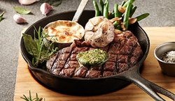
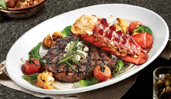
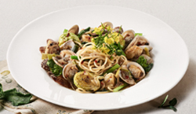
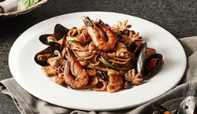
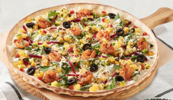
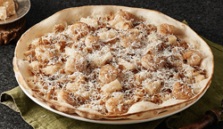
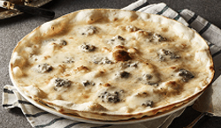

herb ribeye steak
로즈마리, 타임, 월계수향을 가미하여 그릴에 굽고, 허브 버터를 함께 곁들여먹는 스테이크
경상남도 창녕군 마늘농장에서 연간 350t에 달하는 마늘을 사용하며, 최상의 식재료만을 고집합니다.
손으로 직접 빚고 오랜시간 숙성한 도우로 만드는 피자, 20여가지에 달하는 매드포갈릭만의 수제 특제 소스, 다양한 조리법으로 마늘의 풍미를 더한 시크릿 레서피는 매드포갈릭의 프라이드입니다.

로즈마리, 타임, 월계수향을 가미하여 그릴에 굽고, 허브 버터를 함께 곁들여먹는 스테이크

치즈를 듬뿍 버무린 리소 파스타와 버터에 구운 랍스터 그리고 그릴에 구워 육즙이 가득한 등심 스테이크, 신선한 채소를 허브향 가득하게 즐기는 립아이 스테이크 & 리소 랍스터

로즈마리, 타임, 월계수향을 가미하여 그릴에 굽고, 허브 버터를 함께 곁들여먹는 스테이크

치즈를 듬뿍 버무린 리소 파스타와 버터에 구운 랍스터 그리고 그릴에 구워 육즙이 가득한 등심 스테이크, 신선한 채소를 허브향 가득하게 즐기는 립아이 스테이크 & 리소 랍스터

매콤한 타코 슈림프와 달콤한 망고, 아삭한 비트를 지중해풍 요거트 소스와 함께 즐기는 슈림프 망고 피자

화이트 소스에 새우, 파인애플, 고소한 튀긴 마늘이 어우러진 매드포갈릭 대표 피자

이태리 특유의 진한 고르곤졸라 치즈와 달콤한 꿀의 궁합이 환상인 피자